| |
|
KOT DÜZENLEME
|
|
Genel Bilgiler Eş Yükselti Eğrilerinin Kota Göre Soluklaştırılması Çizgi/Sembol/Metinlerin Kota Göre İşaretlenmesi Manuel Kot Atamaları Bir Çizgiye Kot Atama
Bir Çizginin Köşelerine Kot Atama Bir Şeride Göre Eş Yükselti Eğrilerine Kot Atama İki Noktaya Göre Bir Çizginin Köşelerine Kot Atama Bir Sembole Kot Atama Köşe Kotunu Sil/Enterpole Et Ana Eş Yükselti Eğrilerini Otomatik Oluşturma
Eş Yükselti Eğrisi Kotlarını Yuvarlama Koordinat Tabloları Oluşturma Kota Göre Renklendirme Google Earth Kotları Genel Bilgiler
Sayısal harita düzenleme işlemlerinin birçoğunun, çizgilerin ve noktaların Z koordinatının değiştirilmesi veya yazdırılmasıyla ilgili olması yaygındır. Örneğin, 2 boyutlu bir haritayı 3 boyutlu hale getirmek (kotlandırmak), kotlarını belirten yazılara sahip 2 boyutlu bir nokta bulutunu işlemek veya eş yükselti eğrilerini etiketlemek gibi durumlar bu kapsama girer. 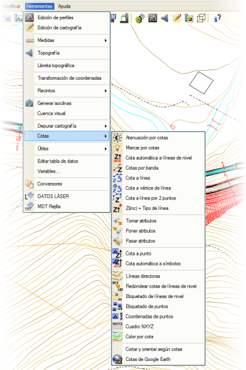
Bu menü, kotlarının yazdırılması gereken eş yükselti eğrilerinin ve tekil noktaların yardımlı etiketlenmesini, ayrıca çizgilerin, çizgi köşelerinin ve sembollerin kotlarının otomatik olarak hesaplanmasını ve değiştirilmesini kontrol eder. Bu menüye Araçlar → Kotlar yolundan erişilir.  Program ayrıca bu fonksiyonlar için özel bir araç çubuğu ile donatılmıştır ve bu çubuk Yapılandırma → Araç Çubuklarını Göster → Kotlar menüsünden gösterilebilir. Program ayrıca bu fonksiyonlar için özel bir araç çubuğu ile donatılmıştır ve bu çubuk Yapılandırma → Araç Çubuklarını Göster → Kotlar menüsünden gösterilebilir.
Eş Yükselti Eğrilerinin Kota Göre Soluklaştırılması 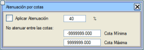Bu seçenek sadece eş yükselti eğrileri (L26 ve L27 tipleri) üzerinde çalışır. Bunun için Soluklaştırmayı Uygula seçeneği işaretlenir, soluklaştırılmak İSTENMEYEN kot aralığı ve soluklaştırma seviyesi (% olarak) belirtilir. Sonuç olarak, verilen aralığın dışındaki eş yükselti eğrileri, aralığa ait olanlara göre daha soluk görünür. Çizgi/Sembol/Metinlerin Kota Göre İşaretlenmesi 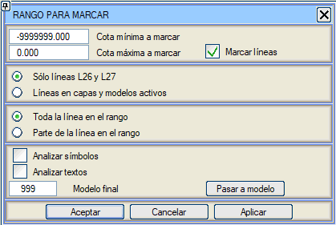Bu araç, aşağıdaki seçeneklere göre vurgulanmak istenen çizgiler/semboller/metinler için minimum ve maksimum kotları tanımlamaya olanak tanır:
[Modele Taşı] butonu, işaretlenen tüm nesneleri belirtilen modele taşır. Çizgileri İşaretle kutucuğu aktif olduğu sürece, yeniden çizimlerde nesneler belirtilen kot aralığına göre işaretlenmiş olarak görünür. Manuel Kot Atamaları Kot değişiklikleriyle ilgili birçok işlem, kullanıcı tarafından yapılan manuel atamalarla gerçekleştirilir. Aşağıda, ISTRAM®/ISPOL®'un bu amaçla sunduğu tüm araçlar açıklanmaktadır. Bir Çizgiye Kot Atama Araçlar → Kotlar → Çizgiye Kot Ata seçeneği, herhangi bir tipteki bir çizginin genel kotunu ve tüm köşelerinin kotunu yeni bir kota değiştirir. Bu, örneğin çizgileştirme sırasında yapılan hataları düzeltmeye olanak tanır. Eğer seçili bir çizgi yoksa, program değiştirilmek istenen çizgiyi seçmenizi ister ve ardından komut satırında, aktif köşenin mevcut kotunu gösterirken yeni kotu sorar. Sayıyı yazıp <Intro> tuşu ile onaylamak, yeni kotun atanması için yeterlidir. Eğer önceden seçilmiş çizgiler varsa, program her çizgi için sırayla yeni kotları sorar. Bu işlemden <Esc> tuşuna basarak herhangi bir zamanda çıkılabilir. Ayrıca, bir kot artışına göre sürekli olarak çizgilere kot atamak da mümkündür. Araçlar → Kotlar → Z(artış) + Çizgi Tipi seçeneği, ilk kotu ve kot artışını sorar. Bundan sonra kullanıcı, programın yeni kot atayacağı her bir çizgiye tıklamalıdır; yeni kot, bir önceki kotun verilen artışla artırılmasıyla elde edilir ve ayrıca mevcut çizgi tipi atanır. Çizgi tipinin değişmesi, hangilerinin zaten kotlandığını bir bakışta tanımayı sağlar. Süreç, kullanıcı tarafından <Esc> tuşu ile kesilene kadar döngüseldir. Bir çizgiye yarı otomatik olarak kot atamanın ve aynı zamanda onu bir eş yükselti eğrisine dönüştürmenin başka bir yolu daha vardır. Bunun için aşağıdaki sıra izlenmelidir:
Bu üç araçtan herhangi birini başlattığınızda (Özellikleri Al / Özellikleri Uygula / Özellikleri Aktar), hangi özelliklerin aktarılacağını seçebileceğiniz bir iletişim kutusu gösterilir. Ayrıca, kot, tipi ne olursa olsun hedef çoklu doğruya aktarılır. 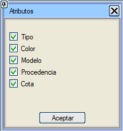 Bir Çizginin Köşelerine Kot Atama Bu seçenek, Araçlar → Kotlar → Çizgi Köşesine Kot Ata yolundan erişilebilir ve herhangi bir tipteki bir çizginin her bir köşesine farklı bir kot atama imkanı sunar. Bu seçenek seçildiğinde, program kotu değiştirilmek istenen köşeyi (eğer zaten seçili değilse) sorar. Bir iletişim kutusu, o köşenin koordinatlarını gösterir ve Z değerini değiştirme imkanı sunar. <Intro> tuşu ile onaylandığında, kot değiştirilir ve çizginin bir sonraki köşesine geçilir. 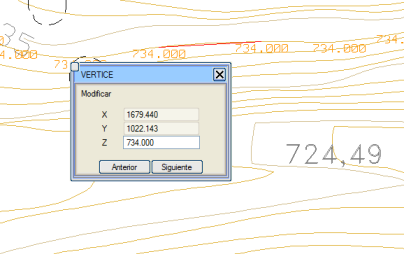
Her durumda, [Önceki] ve [Sonraki] butonları ile çizginin tüm köşeleri arasında gezinmek ve kotlarını onaylamak mümkündür. Bir Şeride Göre Eş Yükselti Eğrilerine Kot Atama Araçlar → Kotlar → Şeride Göre Kotlar seçeneği, fare ile uçları belirlenen bir şeride göre eş yükselti eğrilerine (L26 ve L27) kot atar. 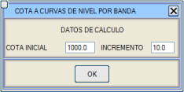Eğriler için başlangıç kotu ve kot artışı verilerini içeren bir pencere sunar. Verileri kabul ettikten sonra, kullanıcıdan şeridin iki ucunu belirtmesi istenir. Bu yapıldıktan sonra, program şerit tarafından kesilen eş yükselti eğrilerine, şeridin ilk noktasına en yakın olana başlangıç kotunu ve sonrakilere artışa göre artan kotları atar. Etkilenen tüm çizgiler, bir yeniden çizim gerçekleşene kadar geçici olarak vurgulanır. İki Noktaya Göre Bir Çizginin Köşelerine Kot Atama Araçlar → Kotlar → 2 Noktaya Göre Çizgiye Kot Ata seçeneği, bir çizginin iki köşesini seçmeyi ve her birine farklı bir kot atamayı ister. Program daha sonra, aradaki köşelerin kotunu veri noktalarına olan mesafelerine göre enterpole eder (geri kalanını olduğu gibi bırakarak) aşağıdaki formüle göre:
Kullanıcı, yukarıdaki formüle göre, aradaki köşelere atanan kotun kesinlikle artan veya azalan olmayabileceğini (örneğin, apsislerde geri dönüşler olan çizgilerde) dikkate almalıdır. Bir Sembole Kot Atama Bir noktanın kotunu Araçlar → Kotlar → Noktaya Kot Ata menüsünden değiştirmek de mümkündür. Bir nokta her seçildiğinde, mesaj mevcut koordinatlarını gösterirken yeni kotu ister. Köşe Kotunu Sil/Enterpole Et Bu araç, köşeleri siler veya kot değerlerini enterpole eder. Kot aralığı girilir ve köşelerin silinmesi mi yoksa kot değerlerinin enterpole edilmesi mi istendiği işaretlenir. Otomatik Kot Atamaları Bazen, temel haritanın kotu atanmamış veya hatalı olabilir, ancak eş yükselti eğrilerinin kotunu belirten yazılarla birlikte gelir. ISTRAM®/ISPOL®, bu durumdan yararlanan ve aşağıda açıklanan araçlarla donatılmıştır. Eş Yükselti Eğrilerine Otomatik Kot Atama Araçlar → Kotlar → Eş Yükselti Eğrilerine Otomatik Kot Atama menüsünden, eş yükselti eğrilerine otomatik olarak kot atanabilir. Bunun için kotlu noktaları, kot metni içeren yazıları ve/veya kot metni içeren yazılarla ilişkilendirilmiş noktaları kullanır. Yukarıda belirtilenlerden en fazla üç veri türüne izin verir. 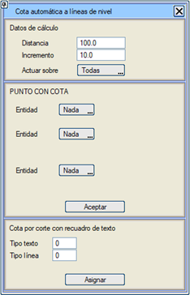Hesaplama şu şekilde yapılır: Çizimdeki iki noktadan ve ilgili kotlarından yola çıkarak, bu noktalarla tanımlanan segmenti kesen eş yükselti eğrileri aranır. Bulunan çizgi sayısı, noktaların kot farkı ve seçilen kot artışıyla uyumluysa, ilgili kotlar atanır ve diğer noktalarla arama devam eder. İhtiyaç duyduğu hesaplama verilerini ve kotu alacağı nokta ve/veya metin tiplerini içeren bir pencere sunar. Hesaplama hassasiyeti, kot ataması yapmak için nesneler (noktalar, yazılar ve/veya etiketler) arasındaki maksimum mesafeyi sınırlar (varsayılan, 100 m). Artış, açıkça eş yükselti eğrilerinin artışını ifade eder. Tümüne Uygula, tüm eş yükselti eğrilerine kot hesaplar ve atar, Kotu Olmayanlara Uygula ise kotu olan çizgileri korur. Hesaplamanın dayandığı nesneler kotlu noktalar ise, nesne olarak nokta, tip olarak kütüphanedeki tip ve ilişkili nokta -1 seçilmelidir. Eğer kot metni içeren yazılar ise, nesne yazı, tip kütüphanedeki tip ve ilişkili nokta -1 olacaktır. Eğer kotu yakındaki bir yazının metninden alınmak istenen noktalar ise, nesne olarak yazı (hesaplama için Z), tip olarak kütüphanedeki tip ve ilişkili nokta (hesaplama için X ve Y) kütüphanedeki tip seçilecektir. Metin Kutusunun Kesişimine Göre Kot : O metnin yazdığı kotun atanmasını istediğiniz çoklu doğruların üzerinde bulunan metinlerin tipini ve çoklu doğruların tipini belirtmek yeterlidir. Tipleri doldurduktan sonra Ata butonuna tıklamak gerekir. Araç, metni çevreleyen kutunun çoklu doğrularla kesişimlerini arar ve kesişim olması durumunda, metnin yazdığı kot çoklu doğruya atanır. Metin kutusunun kesişimlerini ararken, o kotu almaması gereken diğer çoklu doğruları da kesebilir; bu durumda, çizimi gözden geçirmek ve belki de metinlerin boyutunu küçültmek önerilir. Sembollere Otomatik Kot Atama Sembollere otomatik olarak kot atamak için Araçlar → Kotlar → Noktalara Otomatik Kot Ata seçeneğine başvurmak gerekir. Bu menü, kotu olmayan noktalara, yakındaki bir metinde yazılı olan değeri atamaya olanak tanır. İşleyişi şöyledir:
Dolayısıyla, şu değerlere ihtiyaç vardır: nokta-metin konum vektörü, şu şekilde tanımlanır:
Konum vektörü, bir nokta ve ona bağlı yazıyı fare ile seçerek grafik olarak elde edilebilir (bu durumda herhangi bir yakalama modunu aktif etmeye gerek yoktur). Bu algoritmayı belirtilen kriterlerle çalıştırmak için, [Kotları Ver] butonuna basılır. Program, o zaman Nokta Tipi S ile noktaları arar ve toleranslar içinde Metin Tipi R stiline sahip bir yazı bulursa, yazılı kotu noktaya atar ve tipini Değiştirilecek Tip S'ye değiştirir. Yakınında bir metin bulamayan noktalar kendi tipleriyle kalır ve kullanılmayan metinler olduğu gibi kalır. Seçenek kullanıldıktan sonra, toleranslar değiştirilebilir ve ilk denemede dışarıda kalmış bazı noktaları "yakalamak" için tekrar kullanılabilir. Bazen noktalar, kesişen iki çizgi segmentiyle temsil edilir; bu durumlar için, çizgilerin kesişimlerinden noktalar oluşturmaya olanak tanıyan bir seçenek de vardır: [Çizgi Kesişimlerinde Nokta Oluştur], Nokta Tipi S'de belirtilen tipte bir sembolü, aktif çizgiler arasındaki tüm mevcut kesişimlerde oluşturur. Diğer zamanlarda, metinlerin kendileri kotlu sembollere dönüştürülmek istenir, çünkü yerleştirme noktaları (X,Y) istenen koordinatlarla çakışır. [Metinleri Kotlu Noktalara Dönüştür] seçeneği, Değiştirilecek Tip S'de belirtilen tipte sembolleri, Metin Tipi R'de belirtilen tipteki metinlerin yerleştirme noktalarında ve metnin kendisinde belirtilen kotla oluşturur. Bu durumda, çizimde netlik sağlamak için Kullanılan R'yi Sil seçeneğini işaretli bırakmak tavsiye edilir. Eş Yükselti Eğrilerini ve Noktaları Etiketleme Haritalarda kotların yazdırılması, düzenleme aşamasında sıkça yapılan bir işlemdir. ISTRAM®/ISPOL®, bu süreci önemli ölçüde hızlandıran çeşitli yardımcı araçlara sahiptir. Eş Yükselti Eğrilerini Etiketleme 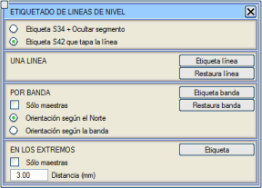Araçlar → Kotlar → Çizgileri Etiketle... menüsü altında, eş yükselti eğrilerinin kotlarını farklı şekillerde yazdırmaya olanak tanıyan bir dizi seçenek gruplandırılmıştır. Yazdırma, ya doğrudan çizgilerin üzerine ya da uçlarına (çizimin çevresine) yapılabilir ve yalnızca L26 ve L27 tipi çizgileri dikkate alır. Yazdırma için, ya üzerinde etiketlenen tüm segmenti gizleyen S34 tipi etiket ya da yalnızca etiketin kapladığı alanı kapatan S42 tipi etiket kullanılır. Gizlenen kısımlar kaybolmaz, sadece sunumda silinir. 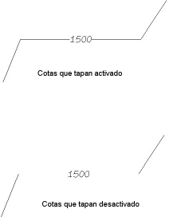Varsayılan olarak, hem S34 hem de S42 etiketleri kotları ondalıksız olarak temsil eder. Bir ondalık sayısı belirtmek isteniyorsa, bu özellik Yapılandırma → Tipleri Tanımla → Sembol Tipi Tanımla menüsünden değiştirilmelidir. Bir eş yükselti eğrisini etiketlemek için, 26 veya 27 tipi bir çizginin segmentini seçmek ve [Çizgiyi Etiketle] butonuna basmak yeterlidir. Benzer şekilde, önceki etiketlemeyi silmek için segment seçilir ve [Çizgiyi Geri Yükle] seçeneği kullanılır veya işlem geri alınır. Bunu bu şekilde yapmak gerekir, çünkü bir çizgiden bir etiket doğrudan silinirse, olduğu yer çizimde gizli kalır (ancak silinmez). Bu seçenekle, silinen o bölge yeniden çizilir ve penceredeki kot etiketi, eğer bu etiket çizginin bir ucunda veya zorunlu bir konumda değilse silinir. Bu durumda kullanıcı etiketi doğrudan silmelidir. [Şeridi Etiketle] seçeneği, eş yükselti eğrilerinin toplu olarak etiketlenmesine olanak tanır. Program, kullanıcıdan bir çizginin (şeridin) uçlarını fare ile belirtmesini ister ve bu çizgi tarafından kesilen tüm eş yükselti eğrileri etiketlenir. Şeride göre etiketleme yaparken ve Çizgiyi Kapatan S42 Etiketi seçeneği işaretliyken, semboller, şeridin çoklu doğruyu kestiği segmentin orta noktası yerine, şeridin çoklu doğruyu kestiği noktada oluşturulur. Eğer Sadece Ana Eğriler kutucuğu işaretlenirse, program sadece ana eş yükselti eğrilerini (L27) arayarak şeride göre etiketleme yapar ve normal eş yükselti eğrilerini (L26) etiketlemez. Şeride göre etiketleme, etiketlerin ya haritanın kuzeyine göre (varsayılan seçenek) ya da şeridin yönüne göre yönlendirilmesine de olanak tanır. Bu, örneğin etiketlerin yönünün kot artışına göre yapılmasını sağlar. [Şeridi Geri Yükle] seçeneği, kullanıcı tarafından uçları belirtilen bir şerit tarafından kesilen segmentlerin etiketlerini kaldırır. Son olarak, ISTRAM®/ISPOL®, eş yükselti eğrilerinin uçlarından otomatik olarak etiketlenmesine olanak tanır. Eğer Sadece Ana Eğriler seçeneği aktif edilirse, bu etiketleme yalnızca ana eş yükselti eğrilerini (L27) etkiler. Çizginin ucuna bir mesafe belirtmek gerekir (varsayılan 3 mm). Eğer mesafe negatif ise, etiketleme içeri doğru yapılır. Sembolleri veya Noktaları Etiketleme Noktaların etiketlenmesi, Araçlar → Kotlar → Noktaları Etiketle seçeneği ile mümkündür; bu seçenek, varsayılan olarak kotu noktanın sağ üst kısmına yazar. Eğer önceden seçilmiş noktalar varsa, hepsi etiketlenir, aksi takdirde program, kullanıcı <Esc> tuşuna basarak fonksiyonu kesene kadar tek tek sorar. S32 sembolü kullanılır, böylece tanımını (Yapılandırma → Tipleri Tanımla → Sembol Tipi Tanımla) değiştirerek sunumu değiştirilebilir. Bu kot etiketinin konumu, Yapılandırma → Tercihler → Sembollerde Sayı Notasyonu menüsünden değiştirilebilir. Ayrıca, Araçlar → Kotlar → Nokta Koordinatları → Sembollerle Yazdır menüsü aracılığıyla sembollerin koordinatlarını etiketlemek de mümkündür, bu da aşağıdaki iletişim kutusunu açar: 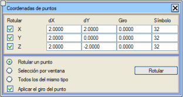 Bu kutu, yazdırılacak koordinatları, koordinat etiketinin sembolün yerleştirme noktasına göre yerleştirileceği mesafeyi (X ve Y olarak), etiketinin dönüşünü ve kullanılacak etiket tipini (varsayılan, S32) işaretlemeye olanak tanır. Tercihler belirtildikten sonra, [Yazdır] butonuna basılarak yazdırma işlemine geçilir. Bu yazdırma, tek bir noktaya, bir pencere tarafından yakalanan tüm noktalara veya belirtilen tipteki tüm noktalara yapılabilir. Diğer bir seçenek ise, Araçlar → Kotlar → Nokta Koordinatları → Hücrelerle Yazdır menüsünü kullanmaktır, bu da aşağıdaki iletişim kutusunu açar: 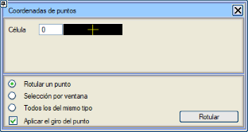Bu kutuda, seçeceğimiz her bir noktanın hangi hücre ile yazdırılacağını, önceki araçta olduğu gibi üç yoldan biriyle seçebiliriz: belirli bir nokta, bir pencerede yakalanan tüm noktalar veya seçtiğimiz tiple aynı olan tüm noktalar. 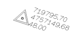Her iki durumda da, Noktanın dönüşünü uygula kutucuğu aktif edilerek, koordinat noktaları oluşturulurken, referans aldıkları sembolün hem dönüşünü hem de konumunu alırlar. Ana Eş Yükselti Eğrilerinin Otomatik Oluşturulması Araçlar → Kotlar → Ana Eş Yükselti Eğrileri seçeneği, ana eğriler arasındaki kot aralığını yeniden atamaya (veya önceden yoksa oluşturmaya) olanak tanır. Program komut satırında yeni aralığı sorar ve ardından eş yükselti eğrilerini analiz ederek kotu verilen sayının katı olanları ana eğriye (L27) ve geri kalanları ara eş yükselti eğrisine (L26) dönüştürür. Eş Yükselti Eğrisi Kotlarını Yuvarlama Fotogrametrik alım sistemine bağlı olarak, bazen eş yükselti eğrileri tam kota sahip olmayabilir, ona yakın bir değere sahip olabilir. Örneğin, nominal kotu 126 m olan bir eş yükselti eğrisi 125,98 veya 126,01 olabilir. Araçlar → Kotlar → Eş Yükselti Eğrisi Kotlarını Yuvarla menüsünden erişilebilen bu işlem, bunları analiz eder ve düzeltir, önceki örnek durumunda 126 m kotunu atar. Program, eş yükselti eğrileri arasındaki nominal aralığı sorar (örneğin, 1:1000 ölçekli bir harita için 1 m) ve aralığın yarısının en yakın katına yuvarlar (örnek için kotları yarım metre aralıklarla yuvarlardı). Koordinat Tabloları Oluşturma Araçlar → Kotlar → NXYZ Tablosu... seçeneği, kullanıcının interaktif olarak belirttiği bir dizi koordinat içeren bir tablo oluşturmaya olanak tanır. Bu tablo, aşağıda detaylandırıldığı gibi Klasik bir modda veya Hücreler ile oluşturulabilir. 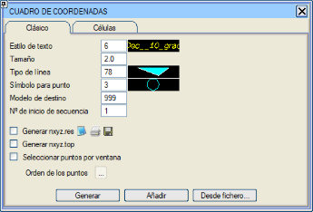Klasik iletişim kutusu, kullanılacak metin stilini ve boyutunu, çerçeve için çizgi tipini ve çizimde nokta numarasını işaretlemek ve tabloda tanımlamak için sembol tipini kontrol eder. Ayrıca, bu tablonun yerleştirileceği bir model belirtilmelidir (varsayılan, 999). Ek olarak, aynı anda noktalarla bir nxyz.res listesi ve bir nxyz.top dosyası oluşturmak mümkündür. Tüm bu tercihler belirtildikten sonra, [Oluştur] butonuna basılır ve ardından çizimde tablonun yerleştirme noktası belirtilir. O anda tablonun başlığı çizilir ve nokta vermeye başlanabilir (genellikle bir yakalama modunu aktif etmek uygun olacaktır). Noktalar tek tek seçilebilir veya iletişim kutusunda uygun seçenek işaretlenirse pencere ile seçilebilir. [Ekle] seçeneği ile tabloya herhangi bir zamanda devam edilebilir (veriler, eğer varsa, listeye ve nokta dosyasına da eklenir). 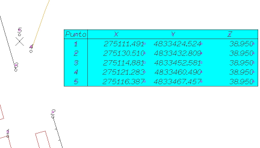
Program ayrıca, koordinat tablosunun oluşturulması için dört sütunlu n X Y Z (nokta numarası ve koordinatlar) formatında ASCII dosyalarını yükleme imkanı da sunar. [Dosyadan...] butonuna basmak, belirtilen formattaki dosyayı (herhangi bir uzantıda) seçmek ve tablonun yerleştirileceği grafik ekran üzerinde bir noktaya tıklamak yeterlidir. Bundan sonra, dosyanın içerdiği noktalar yerleştirilir ve koordinat tablosu tamamlanır. Eğer coğrafi koordinatlarla çalışılıyorsa, tablo ve liste, noktaların bilgilerini boylam, enlem ve yükseklik olarak sunar. 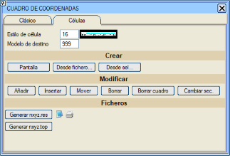Eğer tablo hücreler kullanılarak oluşturulursa, işlevselliği önemli ölçüde artar, çünkü içeriğinin (her noktaya referansla) anında güncellenmesini sağlayan gelişmiş hücreler kullanır ve kullanıcıya bir ön ek ve bir numaralandırma başlangıcı ekleme imkanı sunar. Böylece, bu fonksiyon kullanıldığında, A1, A2, A3,... veya W100, W101, W102, vb. gibi noktalar içeren bir özet tablosu hızlı ve kolay bir şekilde elde edilebilir ve ayrıca bu numaralandırma, ilişkili noktalarla mekansal olarak bağlantılı kalır, yani interaktif olarak değiştirilmesi tabloda anında güncellenir. Hücrelere ilişkin seçenekler, klasik oluşturmaya benzer, ancak bazı farklılıklar gözlemlenir:
Kota Göre Renklendirme Bu seçenek, eş yükselti eğrilerini kotlarına göre farklı renklerle göstermeye olanak tanır: 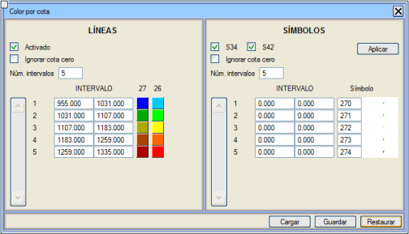
Ayrıca, S34, S42 sembolleriyle kotlandırılmış olan eş yükselti eğrileri, tanımladığımız aralığa göre sembol tiplerini değiştirebilir. Varsayılan olarak program, S270'den S274'e kadar farklı renklere sahip semboller sunar. 
Google Earth Kotları Bu komut aracılığıyla, Google Earth'de belirlenen bölgenin kotlarını kullanarak çizgilere, sembollere ve metinlere kot atayabiliriz. Çizgileri Kota Getir, Metinleri Kota Getir ve Sembolleri Kota Getir kutucukları aktifken Çalıştır kutucuğuna tıkladığımızda, program bu nesnelere Google Earth kotlarını atayacaktır. Eğer Öznitelikleri Kota Getir kutucuğu aktif edilirse, özniteliğe sahip sembollerde bu öznitelik de kot değerini alacaktır. Nesne seçimini, o an yüklü olan tüm elemanlar kümesiyle (Tümü) veya nesneleri seçerek (Seçim) yapabiliriz. Eğer Sadece Kotu 0 Olanlar kutucuğu aktif ise, sadece kotu sıfır olan nesneler Google Earth'den kot alacaktır. Google'ın günde 2500 istek limiti vardır. Her istekte en fazla 512 konum sorgulayabilirsiniz, ancak günde toplam 25.000 konum limitini aşamazsınız. Google Earth, WGS84 referans sistemiyle çalışır, bu yüzden seçilen nesnelerin kotlarını doğru bir şekilde algılayabilmesi için kaynak CRS'mizin doğru tanımlanmış olması gerekir. |